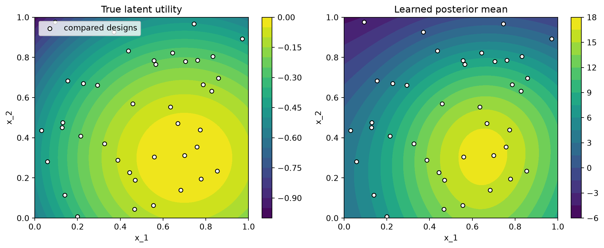

import warnings
import numpy as np
import pandas as pd
from matplotlib import pyplot as plt
from scipy.stats import kendalltau
import bofire.surrogates.api as surrogates
from bofire.data_models.domain.api import Inputs, Outputs
from bofire.data_models.features.api import ContinuousInput, ContinuousOutput
from bofire.data_models.surrogates.api import PairwiseGPSurrogate
warnings.filterwarnings("ignore")
rng = np.random.default_rng(42)Preference Learning with the Pairwise GP
Not every objective can be read off a number line. Sometimes the only signal available is a comparison: a taste panel says cake A is nicer than cake B, a chemist judges one crystallisation cleaner than another, a user clicks one layout over another. The quantity actually being compared — a latent utility — is never observed directly.
BoFire’s PairwiseGPSurrogate learns that latent utility from pairwise comparison data. It wraps BoTorch’s PairwiseGP, a Gaussian process whose likelihood models the probability that one design is preferred over another.
This tutorial fits a PairwiseGPSurrogate to synthetic preference data and checks that it recovers the hidden utility.
Imports
A synthetic preference problem
We work on a two-dimensional input space. The latent utility — the thing an expert implicitly scores when they pick a winner — is a smooth bump that peaks near (0.7, 0.3). In a real preference experiment this function is unknown; we define it here only so we can check what the surrogate learned.
def latent_utility(X: np.ndarray) -> np.ndarray:
"""Ground-truth utility. Unobserved in a real preference experiment."""
peak = np.array([0.7, 0.3])
return -np.sum((X - peak) ** 2, axis=-1)We draw a handful of candidate designs and give each a unique labcode — the identifier BoFire uses to link a design to the comparisons it appears in.
n_candidates = 40
X = rng.random((n_candidates, 2))
labcodes = [f"design_{i:02d}" for i in range(n_candidates)]
experiments = pd.DataFrame(X, columns=["x_1", "x_2"])
experiments["labcode"] = labcodes
experiments.head()| x_1 | x_2 | labcode | |
|---|---|---|---|
| 0 | 0.773956 | 0.438878 | design_00 |
| 1 | 0.858598 | 0.697368 | design_01 |
| 2 | 0.094177 | 0.975622 | design_02 |
| 3 | 0.761140 | 0.786064 | design_03 |
| 4 | 0.128114 | 0.450386 | design_04 |
Now we simulate an expert comparing random pairs of designs. The expert prefers whichever design has the higher latent utility, but their judgement is noisy, so they occasionally pick the worse one.
def make_comparisons(n_comparisons: int) -> pd.DataFrame:
rows = []
for _ in range(n_comparisons):
i, j = rng.choice(n_candidates, size=2, replace=False)
# noisy utilities -> the expert occasionally prefers the worse design
u_i = latent_utility(X[i]) + rng.normal(scale=0.05)
u_j = latent_utility(X[j]) + rng.normal(scale=0.05)
winner, loser = (i, j) if u_i > u_j else (j, i)
# record the winner in slot A or B at random: the *sign* of
# `preference` carries the label, not which slot the winner sits in
if rng.random() < 0.5:
rows.append((labcodes[winner], labcodes[loser], 1.0)) # A preferred
else:
rows.append((labcodes[loser], labcodes[winner], -1.0)) # B preferred
return pd.DataFrame(rows, columns=["labcode_A", "labcode_B", "preference"])
preferences = make_comparisons(n_comparisons=120)
preferences.head()| labcode_A | labcode_B | preference | |
|---|---|---|---|
| 0 | design_26 | design_38 | 1.0 |
| 1 | design_04 | design_15 | 1.0 |
| 2 | design_35 | design_20 | 1.0 |
| 3 | design_09 | design_05 | 1.0 |
| 4 | design_13 | design_04 | 1.0 |
Setting up the surrogate
A PairwiseGPSurrogate needs an input space and exactly one output — the latent utility it will infer.
inputs = Inputs(
features=[
ContinuousInput(key="x_1", bounds=(0.0, 1.0)),
ContinuousInput(key="x_2", bounds=(0.0, 1.0)),
]
)
outputs = Outputs(features=[ContinuousOutput(key="utility")])
surrogate_data = PairwiseGPSurrogate(inputs=inputs, outputs=outputs)
surrogate = surrogates.map(surrogate_data)Unlike a standard surrogate, fit takes two DataFrames — the designs and the comparisons between them:
surrogate.fit(experiments, preferences)
surrogate.is_fittedTrueInspecting the learned utility
predict returns the posterior mean (utility_pred) and standard deviation (utility_sd) of the latent utility on new designs. Pairwise data pins down the ranking of designs, not the absolute utility values — the GP recovers utility only up to an arbitrary scale and offset — so we score it with the Kendall-Tau rank correlation against the true utility.
test_X = rng.random((500, 2))
test_df = pd.DataFrame(test_X, columns=["x_1", "x_2"])
predictions = surrogate.predict(test_df)
true_utility = latent_utility(test_X)
tau = kendalltau(predictions["utility_pred"], true_utility).correlation
print(f"Kendall-Tau rank correlation vs. true utility: {tau:.3f}")Kendall-Tau rank correlation vs. true utility: 0.894A correlation close to 1 means the surrogate ranks unseen designs almost exactly as the latent utility would. We can see this directly by plotting the learned posterior mean next to the ground truth.
fig, axes = plt.subplots(1, 2, figsize=(11, 4.5))
grid = np.linspace(0, 1, 60)
gx, gy = np.meshgrid(grid, grid)
grid_df = pd.DataFrame({"x_1": gx.ravel(), "x_2": gy.ravel()})
true_grid = latent_utility(grid_df.to_numpy()).reshape(gx.shape)
pred_grid = surrogate.predict(grid_df)["utility_pred"].to_numpy().reshape(gx.shape)
for ax, surface, title in [
(axes[0], true_grid, "True latent utility"),
(axes[1], pred_grid, "Learned posterior mean"),
]:
contour = ax.contourf(gx, gy, surface, levels=20, cmap="viridis")
ax.scatter(
X[:, 0], X[:, 1], c="white", edgecolors="black", s=25,
label="compared designs",
)
ax.set(xlabel="x_1", ylabel="x_2", title=title)
fig.colorbar(contour, ax=ax)
axes[0].legend(loc="upper left")
plt.tight_layout()
plt.show()
Both surfaces peak in the same region: from comparisons alone, the surrogate has located where utility is highest. The absolute contour values differ — pairwise learning identifies the latent utility only up to a monotone transform — but the ranking, which is what matters for optimization, is recovered.
The preference encoding
The preferences DataFrame must have exactly these three columns:
| column | meaning |
|---|---|
labcode_A |
first design in the comparison (must appear in experiments) |
labcode_B |
second design in the comparison (must appear in experiments) |
preference |
sign marks the winner: > 0 → A preferred, < 0 → B preferred |
Only the sign of preference is used — its magnitude is currently ignored. A preference of exactly 0 denotes a tie; tied rows are dropped with a warning. Because the slot (A vs. B) is just bookkeeping, swapping labcode_A with labcode_B and flipping the sign of preference describes the very same comparison and yields the same fit.
Where to go next
PairwiseGPSurrogate is the modelling building block for preference-based Bayesian optimization: combine it with an acquisition function such as BoTorch’s Expected Utility of the Best Option (EUBO) to decide which pair of designs to put in front of the expert next.